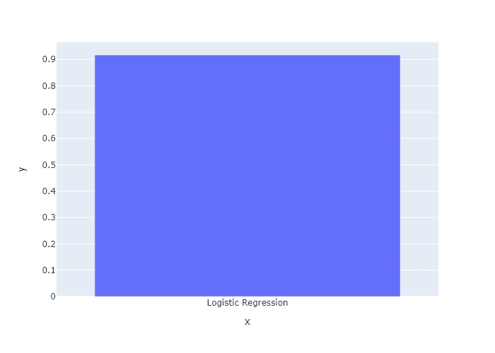
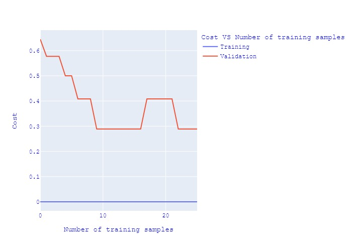
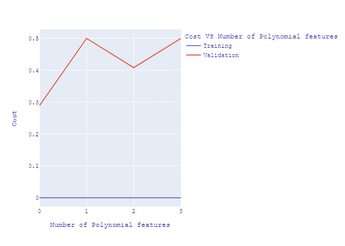
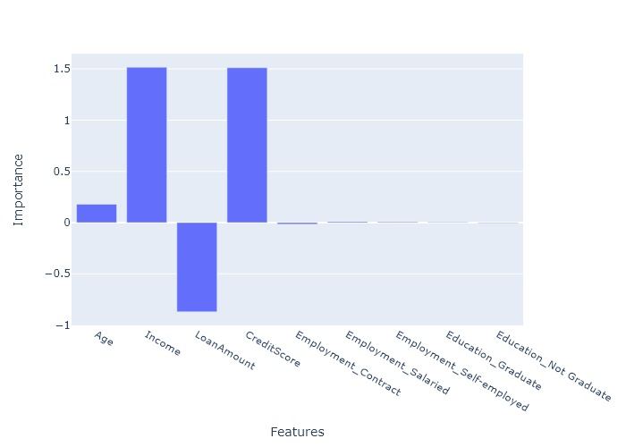

Model Training
Results for the most recent run, with a comparison against every model you have trained on this dataset.
0.9167
Share of correct predictions on the test set
Logistic Regression
ClassificationLogistic Regression is a supervised classification algorithm that predicts the probability of a binary outcome using a sigmoid (logistic) function. Despite its name, it is used for classification tasks and works well when the relationship between features and log-odds is approximately linear. It is efficient, interpretable, and performs well on linearly separable data.
Diagnostics
How this run behaves, and what the charts tell you.

Score comparison across models
Each bar is one model you have trained on this dataset with the current preprocessing settings. Use it to see which algorithm suits the data before you invest in tuning — a large gap usually says more about the data than the hyperparameters.

Cost against training set size
A learning curve. If the training and validation costs converge at a high value, the model is underfitting and needs more capacity. If they stay far apart, it is overfitting and more data or stronger regularisation will help.

Cost against model complexity
Increasing the polynomial degree lets the model bend to fit the data. The lowest point on the validation curve is the sweet spot; past it, extra complexity fits noise rather than signal.

Feature importance
Features ranked by their contribution to the prediction. The top few usually carry most of the signal, which makes this a practical shortlist for feature selection — and a sanity check that the model is not leaning on something it should not see.
Run history
Every model trained in this session, most recent last.
| # | Model | Accuracy |
|---|---|---|
| 1 | Logistic Regression Latest | 0.9167 |